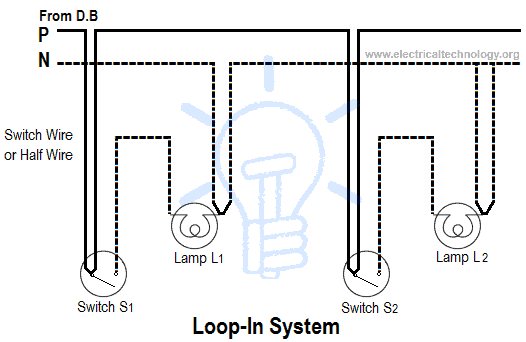
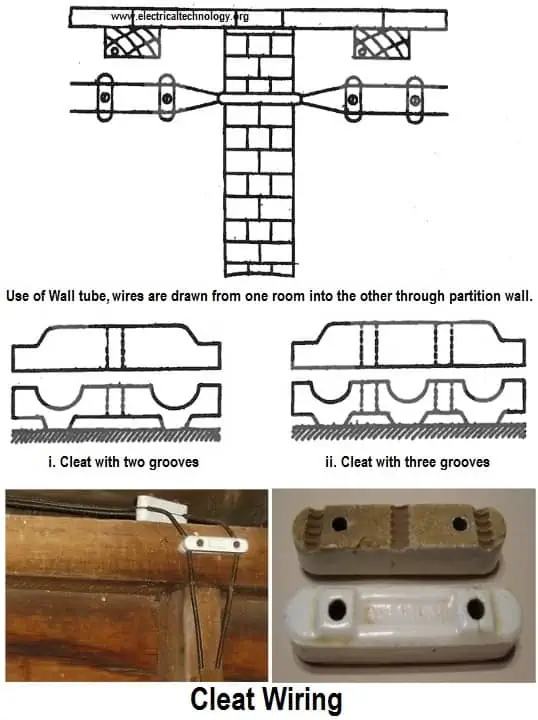
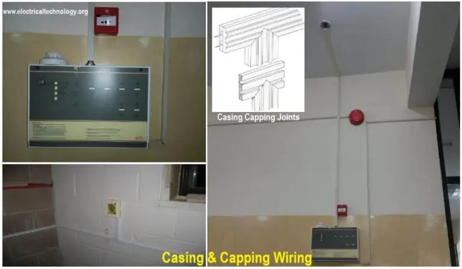
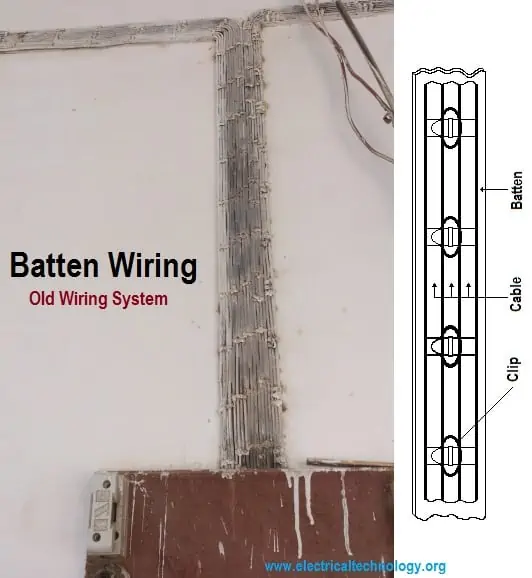
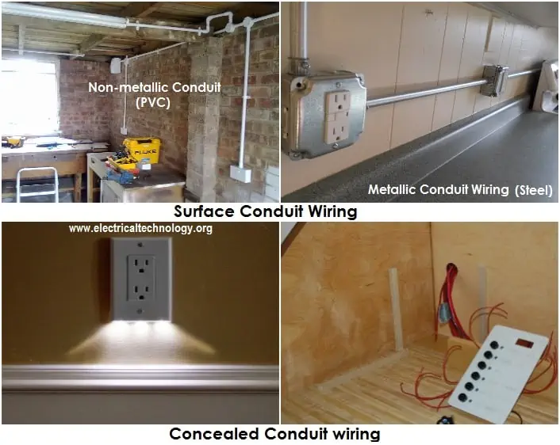
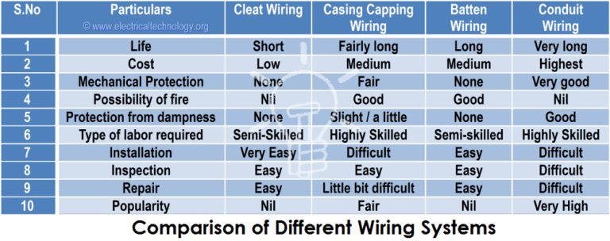

Methods of Wiring And Different Types of Wiring Systems
What is Electrical Wiring?
Electrical Wiring is a process of connecting cables and wires to the related devices such as fuse, switches, sockets, lights, fans, etc., to the main distribution board in a specific structure to the utility pole for continuous power supply.
Methods of Electrical Wiring Systems w.r.t Taking Connection
Wiring (a process of connecting various accessories for distribution of electrical energy from supplier’s meter board to home appliances such as lamps, fans and other domestic appliances is known as Electrical Wiring) can be done using two methods which are:
- Joint box system or Tee system
- Loop – in system
They are discussed as follows:
Joint Box or Tee or Jointing System
In this method of wiring, connections to appliances are made through joints. These joints are made in joint boxes by means of suitable connectors or joints cutouts. This method of wiring doesn’t consume too much cable size.
You might think because this method of wiring doesn’t require too much cable it is therefore cheaper. It is, of course, but the money you save from buying cables will be used in buying joint boxes, thus the equation is balanced. This method is suitable for temporary installations and it is cheap.
Loop-in or Looping System
This method of wiring is universally used in wiring. Lamps and other appliances are connected in parallel so that each of the appliances can be controlled individually. When a connection is required at a light or switch, the feed conductor is looped in by bringing it directly to the terminal and then carrying it forward again to the next point to be fed.
The switch and light feeds are carried around the circuit in a series of loops from one point to another until the last on the circuit is reached. The phase or line conductors are looped either in switchboard or box and neutrals are looped either in switchboard or from light or fan. Line or phase should never be looped from light or fan.
Advantages of Loop-In Method of Wiring
- It doesn’t require joint boxes and so money is saved
- In loop-in systems, no joint is concealed beneath floors or in roof spaces
- Fault location is made easy as the points are made only at outlets so that they are accessible
Disadvantages of Loop-In Method of Wiring
- Length of wire or cables required is more and voltage drop and copper losses are therefore more
- Looping-in switches and lamp holders is usually difficult
Different Types of Electrical Wiring Systems
The types of internal wiring usually used are:
Cleat Wiring
This system of wiring comprises ordinary VIR or PVC insulated wires (occasionally, sheathed and weather-proof cable) braided and compounded held on walls or ceilings by means of porcelain cleats, plastic, or wood.
Cleat wiring system is a temporary wiring system therefore it is not suitable for domestic premises. The use of cleat wiring system is over nowadays.
Advantages of Cleat Wiring:
- It is a simple and cheap wiring system
- Most suitable for temporary use i.e., under construction building or army camping
- As the cables and wires of the cleat wiring system are in open air, faults in cables can be seen and repaired easily
- Cleat wiring system installation is easy and simple
- Customization can be easily done in this wiring system e.g., alteration and addition
- Inspection is easy and simple
Disadvantages of Cleat Wiring:
- Appearance is not so good
- Cleat wiring can’t be used for permanent use because sag may occur after some time of usage
- In this wiring system, the cables and wiring are in open air, therefore, oil, steam, humidity, smoke, rain, chemical, and acidic effects may damage the cables and wires
- It is not a lasting wiring system because of the weather effect, risk of fire, and wear & tear
- It can only be used on 250/440 Volts on low temperature
- There is always a risk of fire and electric shock
- It can’t be used in important and sensitive locations and places
- It is not a lasting, reliable, and sustainable wiring system
Casing and Capping wiring
Casing and Capping wiring system was a famous wiring system in the past but it is considered obsolete these days because of Conduit and sheathed wiring systems. The cables used in this kind of wiring were either VIR or PVC or any other approved insulated cables.
The cables were carried through the wooden casing enclosures. The casing is made up of a strip of wood with parallel grooves cut lengthwise so as to accommodate VIR cables. The grooves were made to separate opposite polarity. The capping (also made of wood) was used to cover the wires and cables installed and fitted in the casing.
Advantages of Casing Capping Wiring:
- It is a cheap wiring system as compared to sheathed and conduit wiring systems
- It is a strong and long-lasting wiring system
- Customization can be easily done in this wiring system
- If phase and neutral wire are installed in separate slots, then repairing is easy
- It stays safe from oil, steam, smoke, and rain
- No risk of electric shock due to covered wires and cables in casing & capping
Disadvantages of Casing Capping Wiring:
- There is a high risk of fire in casing & capping wiring system
- Not suitable in the acidic, alkalies, and humidity conditions
- Costly repairing and need more material
- Material can’t be found easily in the contemporary
- White ants may damage the casing & capping of wood
Batten Wiring (CTS or TRS)
Single core or double core or three core TRS cables with circular oval-shaped cables are used in this kind of wiring. Mostly, single core cables are preferred. TRS cables are chemical proof, waterproof, steam proof, but are slightly affected by lubricating oil. The TRS cables are run on well-seasoned and straight teak wood batten with at least a thickness of 10mm.
The cables are held on the wooden batten by means of tinned brass link clips (buckle clip) already fixed on the batten with brass pins and spaced at an interval of 10cm for horizontal runs and 15cm for vertical runs.
Advantages of Batten Wiring:
- Wiring installation is simple and easy
- Cheap as compared to other electrical wiring systems
- Appearance is good and beautiful
- Repairing is easy
- Strong and long-lasting
- Customization can be easily done in this wiring system
- Less chance of leakage current in batten wiring system
Disadvantages of Batten Wiring:
- Can’t be installed in the humidity, chemical effects, open and outdoor areas
- High risk of fire
- Not safe from external wear & tear and weather effects (because the wires are openly visible to heat, dust, steam, and smoke)
- Heavy wires can’t be used in batten wiring system
- Only suitable below 250V
- Need more cables and wires
Lead Sheathed Wiring
This type of wiring employs conductors that are insulated with VIR and covered with an outer sheath of lead aluminum alloy containing about 95% of lead. The metal sheath gives protection to cables from mechanical damage, moisture, and atmospheric corrosion.
The whole lead covering is made electrically continuous and is connected to earth at the point of entry to protect against electrolytic action due to leaking current and to provide safety in case the sheath becomes alive. The cables are run on wooden batten and fixed by means of link clips just as in TRS wiring.
Conduit Wiring
There are two additional types of conduit wiring according to pipe installation:
Surface Conduit Wiring
If conduits are installed on the roof or wall, it is known as surface conduit wiring. In this wiring method, they make holes on the surface of the wall at equal distances and the conduit is installed then with the help of rawl plugs.
Concealed Conduit Wiring
If the conduit is hidden inside the wall slots with the help of plastering, it is called concealed conduit wiring. In other words, the electrical wiring system inside the wall, roof, or floor with the help of plastic or metallic piping is called concealed conduit wiring. Obviously, it is the most popular, beautiful, stronger, and common electrical wiring system nowadays.
Types of Conduit
The following conduits are used in the conduit wiring systems (both concealed and surface conduit wiring):
- Metallic Conduit
- Non-metallic Conduit
Metallic Conduit:
Metallic conduits are made of steel which is very strong but costly as well. There are two types of metallic conduits:
- Class A Conduit: Low gauge conduit (Thin layer steel sheet conduit)
- Class B Conduit: High gauge conduit (Thick sheet of steel conduit)
Non-metallic Conduit:
A solid PVC conduit is used as a non-metallic conduit nowadays, which is flexible and easy to bend.
Size of Conduit:
The common conduit pipes are available in different sizes generally, 13, 16.2, 18.75, 20, 25, 37, 50, and 63 mm (diameter) or 1/2, 5/8, 3/4, 1, 1.25, 1.5, and 2 inch in diameter.
Advantages of Conduit Wiring Systems
- It is the safest wiring system (Concealed conduit wiring)
- Appearance is very beautiful (in case of concealed conduit wiring)
- No risk of mechanical wear & tear and fire in case of metallic pipes
- Customization can be easily done according to future needs
- Repairing and maintenance is easy
- There is no risk of damaging the cable insulation
- It is safe from corrosion (in case of PVC conduit) and risk of fire
- It can be used even in humidity, chemical effects, and smoky areas
- No risk of electric shock (In case of proper earthing and grounding of metallic pipes)
- It is a reliable and popular wiring system
- It is a sustainable and long-lasting wiring system
Disadvantages of Conduit Wiring Systems
- It is an expensive wiring system (Due to PVC and Metallic pipes, additional earthing for metallic pipes, tees, and elbows, etc.)
- Very hard to find the defects in the wiring
- Installation is not easy and simple
- Risk of electric shock (In case of metallic pipes without proper earthing & grounding system)
- Very complicated to manage additional connections in the future
Comparison between Different Wiring Systems
The table below shows the comparison between all the above-mentioned wiring systems:
